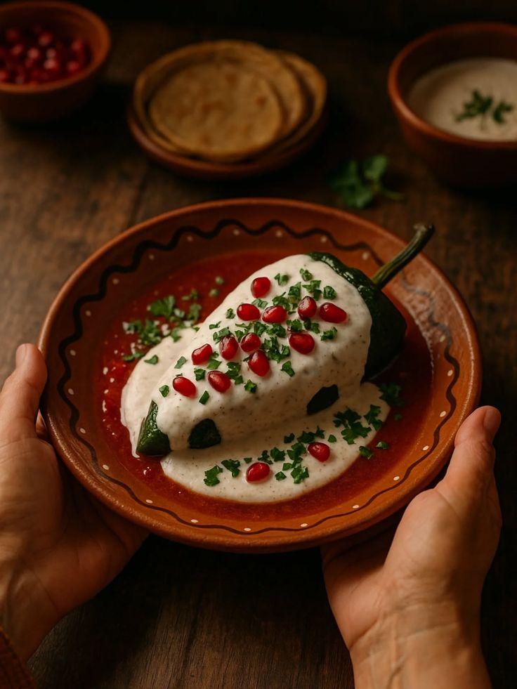

Chiles en Nogada

Chiles en nogada is one of Mexico’s most celebrated dishes, known for its balance of savory, sweet, and creamy flavors, as well as its iconic tricolor presentation that reflects the Mexican flag. The dish begins with roasted poblano peppers that are carefully peeled and kept intact, then stuffed with picadillo — a warm, aromatic mixture of meat, fruit, nuts, and spices.
The defining element is the nogada, a smooth walnut sauce made from fresh walnuts, milk or cream, cheese, and a touch of sweetness. When prepared properly, the sauce is thick, delicate, and naturally pale, complementing rather than overpowering the flavors of the filling.
Each chile is finished with pomegranate seeds and fresh parsley, adding color, acidity, and herbal freshness. Traditionally served at room temperature, chiles en nogada are associated with late summer and early fall, when both fresh walnuts and pomegranates are in season.
Ingredients
For the chiles
- 6 poblano peppers
- Oil (for light roasting)
For the picadillo (filling)
- 500 g – 1 kg ground beef (depending on pepper size)
- 1 small onion, finely chopped
- 2 garlic cloves, minced
- 2 Roma tomatoes, chopped
- 1 apple, peeled and diced
- 1 pear, peeled and diced
- 1 peach, peeled and diced
- ¼ cup raisins
- ¼ cup slivered almonds
- Salt and pepper
- Optional spices: cinnamon, clove, bay leaf
For the nogada (walnut sauce)
- 1 cup walnuts (peeled and soaked to remove bitterness)
- 1 cup milk or cream
- 100 g fresh cheese
- 1 tablespoon sugar
- Pinch of salt
For garnish
- Pomegranate seeds
- Fresh parsley, chopped
Steps
Roast and prepare the chiles
- Roast the poblano peppers over a flame or in a pan until the skin blisters.
- Place them in a plastic bag for 10 minutes to steam.
- Peel off the skin carefully.
- Make a small slit on the side and remove the seeds.
- Set aside.
Make the picadillo
- Cook the ground beef in a pan until browned.
- Add the onion and garlic; cook until softened.
- Add the tomatoes and cook until the mixture thickens slightly.
- Add the diced apple, pear, and peach.
- Add the raisins, almonds, salt, pepper, and optional spices.
- Cook until the fruit softens but does not turn mushy.
- Taste and adjust seasoning.
Make the nogada
- Blend the walnuts with milk or cream.
- Add the fresh cheese.
- Add the sugar and salt.
- Blend until smooth.
- Adjust consistency:
- If too thick → add more milk
- If too thin → add more walnuts or cheese
Serve
- Stuff each chile with picadillo.
- Place on a plate.
- Cover with nogada sauce.
- Sprinkle pomegranate seeds.
- Finish with chopped parsley.
Enjoy!